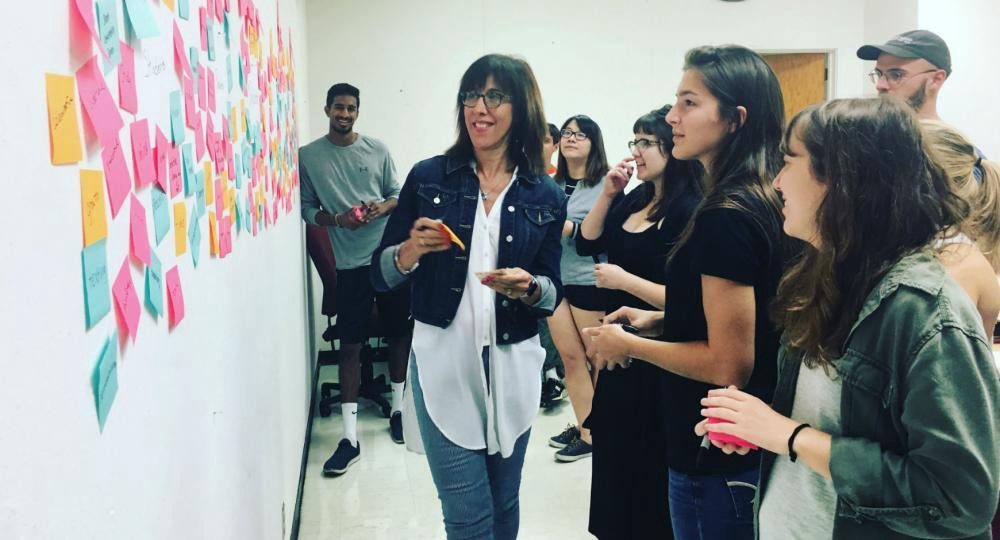
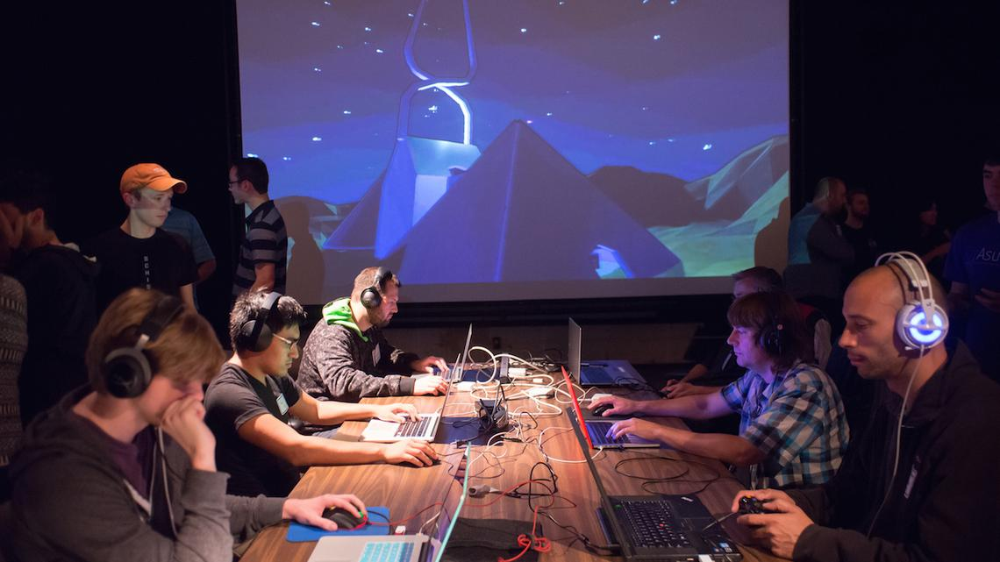
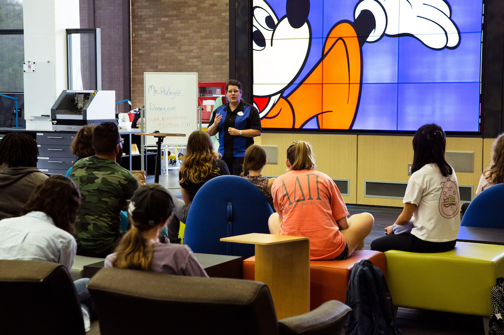
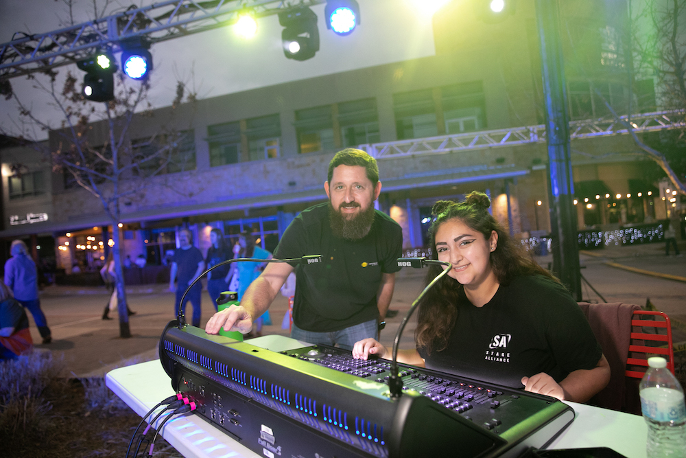
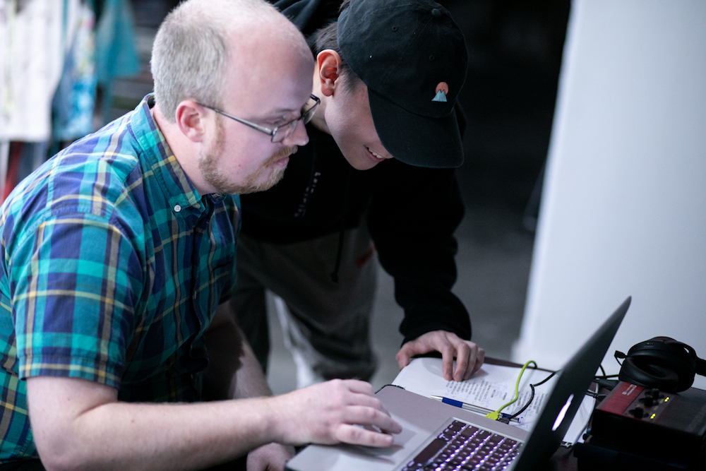

Faculty
LEADERSHIP
Assistant Dean of SDCT: Doreen Lorenzo
Chair of Department of AET: Michael Baker
STAFF
Academic Advisor: Doris Gilbert
Industry Relations Manager: Jamil Hooper
Communications and Industry Relations Assistant: Michaela Newman
Undergraduate Admissions Coordinator: David Rezaei
Faculty/Professors
Taylor Bancroft
- Full Stack Engineer, Developer
- Courses Taught (2021-2022): AET 319 (Media and Technology)
Bill Byrne
- Multimedia Digital Artist, Game Artist, Motion Graphics Designer
- Courses Taught (2021-2022): AET 319 (Art and Content), AET 334E (Video Game Art Pipeline), AET 327C (Advanced Motion Graphics), AET 339 (Portfolio Development), AET 339 (Audio Reactive Visuals)
Deepak Chetty
- Director, Cinematographer, VFX/XR Desginer
- Courses Taught (2021-2022): AET 339 (Concepts of Real Time Rendering), AET 339 (Virtual Production)
Kyle Chittenden
- Game Animator, Tech Animator
- Courses Taught (2021-2022): AET 333 (Game Character Animation, Previously known as Realtime Animation Techniques)
David Cohen
- Game Producer, Game Designer
- Courses Taught (2021-2022): AET 319 (Design and Interactivity), AET 318C (Foundations of Video Game Development), AET 336C (Video Game History and Culture), AET 339 (Narrative Design), AET 372 (Senior Design Projects I), AET 373 (Senior Design Projects II)
Tyler Coleman
- Independent Game Developer, Game Programmer
- Courses Taught (2021-2022): AET 310 (Foundations of Creative Coding), AET 333 (Procedural Generation in Games), AET 334F (Video Game Scripting), AET 334M (Video Game Systems Design), AET 339 (Physical Game Design), AET 339 (Mobile Game Design)
Jessie Contour
- Designer, Technical Animator
- Courses Taught (2021-2022): AET 319 (Media and Technology), AET 330 (Tech Art 1), AET 339 (Future of Gaming with Dell), AET 339 (Next Level Cosplay), AET 339 (Next Level Arcade)
Neal Daugherty
- Digital Artist, Designer
- Courses Taught (2021-2022): AET 306 (Foundations of Digital Imaging and Visualization), AET 319 (Art and Content), AET 324E (Concepts of Visual Style), AET 339 (Motion and Animation, Previously known as Introduction to 2D Animation), AET 339 (Design Studio: “Gravitivity”)
Natasha Davison
- Television Producer, Writer, Director
- Courses Taught (2021-2022): AET 339 (Business of Entertainment)
Lucas Dimick
- Artist, Independent Animator
- Courses Taught (2021-2022): AET 324D (Principles of Animation), AET 339 (Storyboard Concepts)
Kyle Evans
- Sound Designer, New Media Artist
- Courses Taught (2021-2022): AET 305 (Foundations of Music Technology), AET 310 (Foundations of Creative Coding), AET 319 (Sound and Space), AET 339 (Immersive Pop-ups), AET 339 (DIY Synthesizers)
Eric Freeman
- Computer Science Ph.D., Author
- Courses Taught (2021-2022): AET 310 (Foundations of Creative Coding)
MK Haley
- Themed Entertainment Designer, Producer
- Courses Taught (2021-2022): AET 330T (Digital Design Experience), AET 339 (Themed Entertainment Design), AET 339 (Nimble Design for Tough Times), AET 339 (Storytelling with Mini Golf)
Jose Kozan
- AR/MR/XR Designer, Architect
- Courses Taught (2021-2022): AET 330T (Mixed Reality for the Masses), AET 339 (Storytelling with AR)
Yuliya Lanina
- Multimedia Artist, Performer
- Courses Taught (2021-2022): AET 339 (Drawing for Designers), AET 339 (Gensler DXD Studio Partnership), AET 339 (Humor in Storytelling), AET 372 (Senior Design Projects I), AET 373 (Senior Design Projects II)
Sam Lipman
- Multimedia Composer
- Courses Taught (2021-2022): AET 323E (Video Game Audio I), AET 341C (Virtual Instruments), AET 341D (Digital Musicianship), AET 321C (Audio Processing)
Chris Muenchow
- Technical Product Manager
- Courses Taught (2021-2022): AET 348 (Concert and Event Lighting)
Shannon Murray
- Writer, Storyteller
- Courses Taught (2021-2022): AET 339 (Intro to Narrative)
Sven Ortel
- Projection Designer
- Courses Taught (2021-2022): AET 344F (Design Skills: Projection), AET 348G: Media Design and Technology)
Isaac Oster
- Technical Artist, 3D Game Artist
- Courses Taught (2021-2022): AET 319 (3D Foundations), AET 326C (3D Modeling and Texturing)
Chris Ozley
- Music Composer and Arranger
- Courses Taught (2021-2022): AET 320G (Audio Coding I), AET 323D (Interactive Music), AET 339 (Generative Audio Programming), AET 350 (Computer Music Project)
Chip Sbrogna
- Game and Level Designer
- Courses Taught (2021-2022): AET 333 (Challenges in Game Design)
Matt Smith
- Projection Designer
- Courses Taught (2021-2022): AET 316C (Foundations of PLAI), AET 319 (Sound and Space), AET 329F (Projection Mapping), AET 339 (SR Design Project Story Mode), 344D (3D Previsualization for Live Entertainment), AET 348C (Live Event Engineering)
Honoria Starbuck
- International Artist
- Courses Taught (2021-2022): Courses Taught (2021-2022): AET 304 (Foundations of AET), AET 319 (Design and Interactivity)
Paul Toprac
- UT GDAD Program Associate Director, Game and Software Developer
- Courses Taught (2021-2022): AET 376 (Game Development Capstone: 2D Games), AET 377 (Game Development Capstone: 3D Games)

Image Credits: UT News

Image Credits: Austin Inno

Image Credits: UT SDCT Website

Image Credits: UT SDCT Website

Image Credits: UT SDCT Website